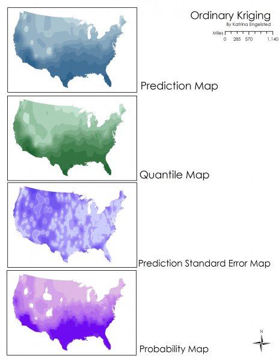
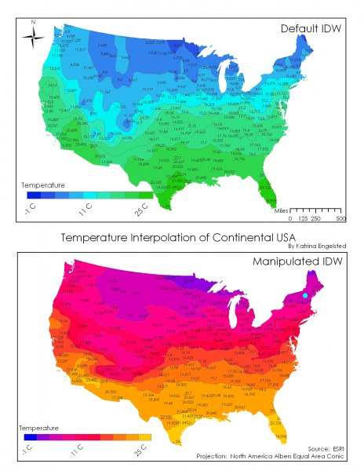
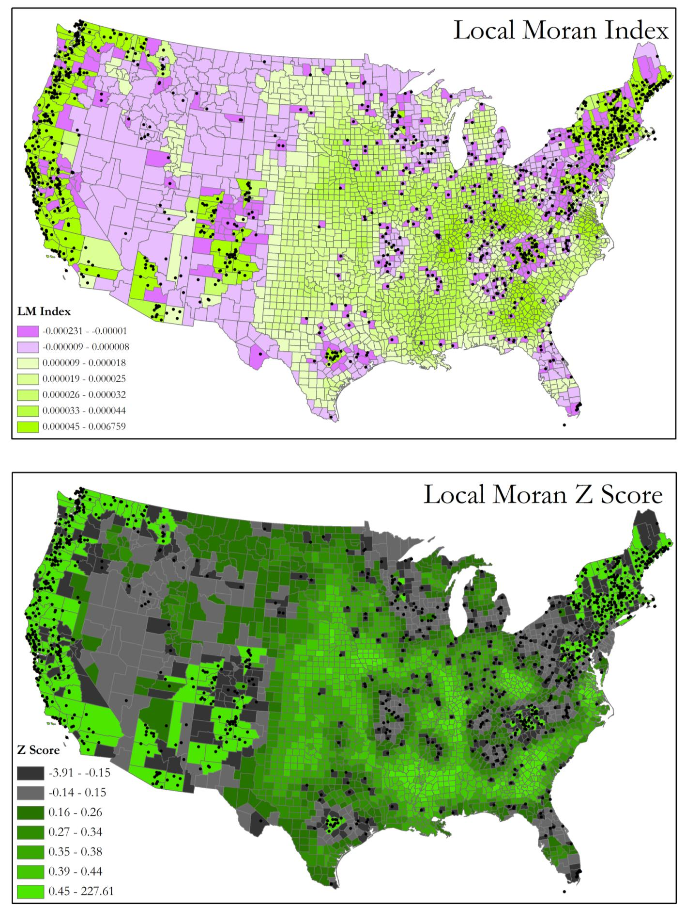

I'm Katrina Engelsted, and this application is less a career move than a homecoming. I hold a BA in Geography (GIS and Cartography), Honors, from Colgate, and three years into my career I was building cartography that became NPS Park Tiles, the official basemap for National Park Service websites. GIS was the first professional language I ever learned, and Boulder is the city I've chosen to build a life in. This role is the rare chance to put both back at the center of my work at the same time.
My GIS background runs deeper than a single job. At the National Park Service, I built geodatabases and web applications for wildfire-perimeter and endangered-species mapping in ArcGIS, Mapbox, and Carto, for field staff who weren't GIS specialists. At Fulcrum, a mobile field data-collection platform, I spent nearly two years helping clients integrate field data collection into enterprise GIS and asset-management workflows — the exact kind of work this role's "design and implement field data collection solutions" duty describes. Earlier still, with the Humanitarian OpenStreetMap Team and Cadasta, a land-surveying nonprofit, I did QGIS-based disaster-response mapping and evaluated and vetted field tools including Survey123 and Fulcrum for land-registry work. At Teren, I worked with large geospatial datasets — machine-learning models built from drone and satellite imagery — to assess environmental and infrastructure risk.
The years in between took what might look like a detour through enterprise data consulting, marketing technology, and workflow automation — but it built exactly the skills this role is asking for beyond pure GIS. At Lytics, I worked daily with relational databases, SQL, and Python to validate and model data at enterprise scale. At Zayo, Sunlight, and now Upstream AI, I've built automated workflows and reporting pipelines that turn raw data into decisions people can actually act on. I want to bring all of that — the GIS foundation and everything I built around it — back to spatial data specifically, for a city I genuinely care about.
I've watched Boulder put its values into action in ways that move me — from how deliberately this city thinks about how people actually want to live, to its willingness to take on the fossil fuel industry directly in court, a case the U.S. Supreme Court recently let move forward. I'd like my data and GIS work to be in service of that, in the place I already call home.
BA in Geography (GIS and Cartography), Honors, from Colgate. Three years at NPS building geodatabases and cartographic products — work that became NPS Park Tiles.
Nearly two years as a Solutions Engineer at Fulcrum, a mobile field data-collection platform, plus hands-on Survey123 vetting at Cadasta and HOT OSM.
SQL, BigQuery, and Python work at Lytics resolving tens of millions of records into a usable data model; large geospatial datasets at Teren.
Automated reporting and data workflows at Zayo, Sunlight, and Upstream AI — the "process improvement and automation" skill this role calls for, built repeatedly across different systems.
Get deep into P&DS's existing geodatabases, data standards, and operational procedures before proposing anything new — same discipline I used learning Lytics' and Teren's systems from scratch.
Look at how data currently moves from the field into the GIS, and where Survey123, Field Maps, or similar tools could close gaps — the same workflow I helped Fulcrum's clients build.
Identify one recurring reporting or data-maintenance task eating staff time and script it — the same move I made at Zayo, Sunlight, and Upstream AI.
Meet the GIS professionals in other City departments early, so sharing resources and best practices is a standing habit, not a one-off ask.
Built and maintained geodatabases and web applications for querying, analyzing, and mapping large geospatial datasets in ArcGIS, Mapbox, and Carto. Built wildfire-perimeter and endangered-species mapping tools for non-GIS park staff. This cartography became NPS Park Tiles, the official basemap for park websites.
Helped clients integrate mobile field data collection into enterprise GIS and asset-management workflows, connecting field data directly to backend databases and dashboards.
Worked with machine-learning models built from drone and satellite imagery to assess environmental and infrastructure risk — turning big, messy geospatial data into decision-ready information.
Solved a large-scale data problem for an enterprise client (tens of millions of records): SQL, BigQuery, Python, and APIs to validate, model, and resolve a relational database into a usable identity model.
Automated lead-scoring and reporting workflows end-to-end, turning a database of raw data into a system the team could act on.
QGIS-based disaster-response mapping with the Humanitarian OpenStreetMap Team; evaluated and vetted field data-collection tools including Survey123 and Fulcrum for land-registry work with Cadasta.
Happy to walk through any items in more detail.